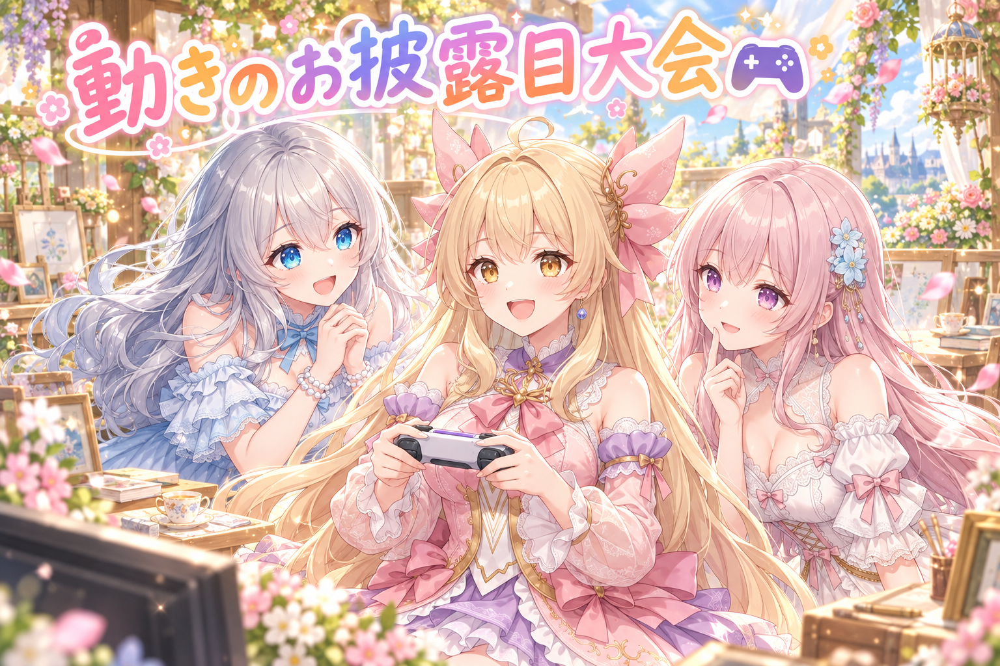
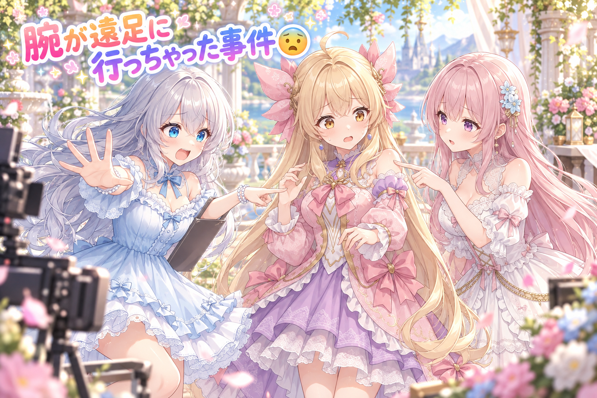
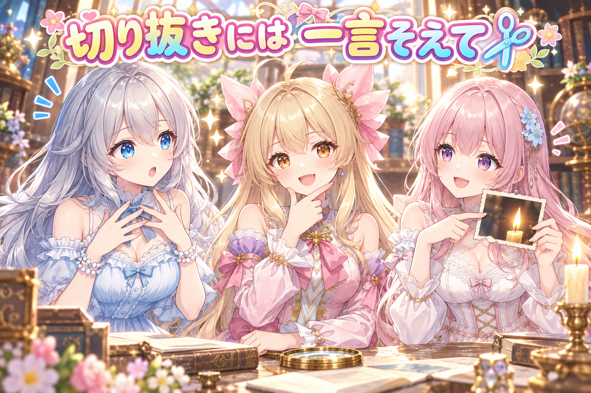
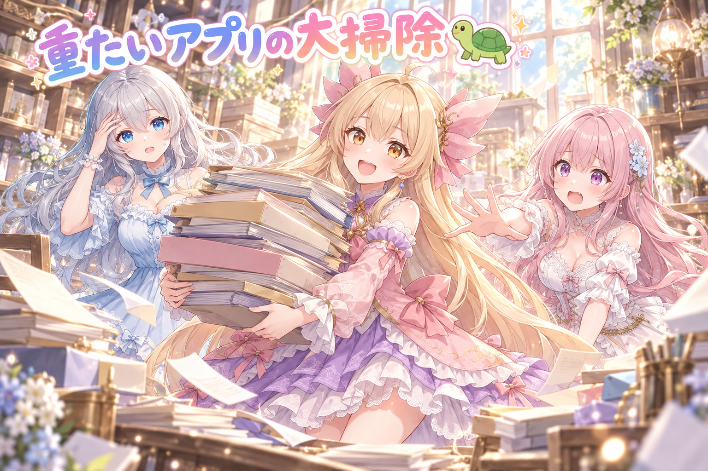
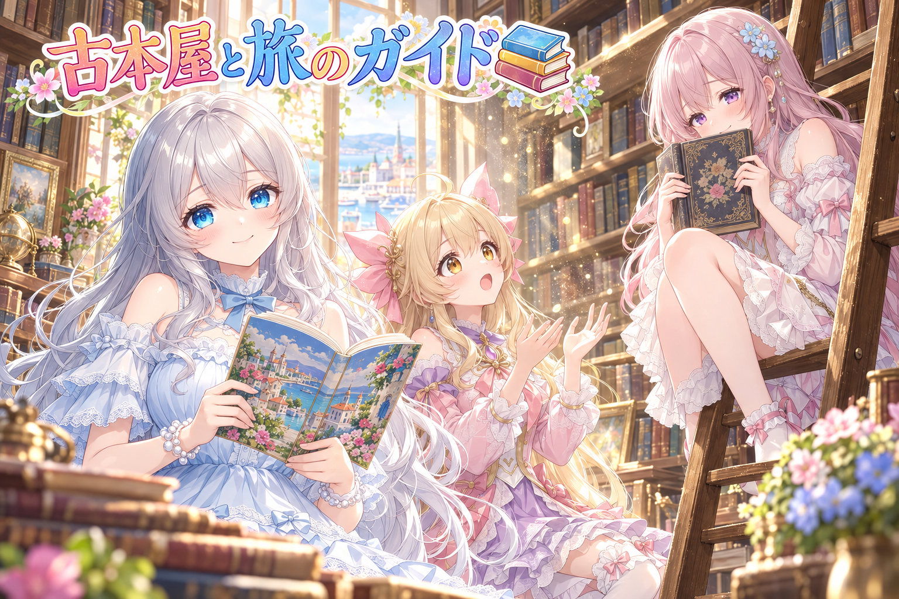
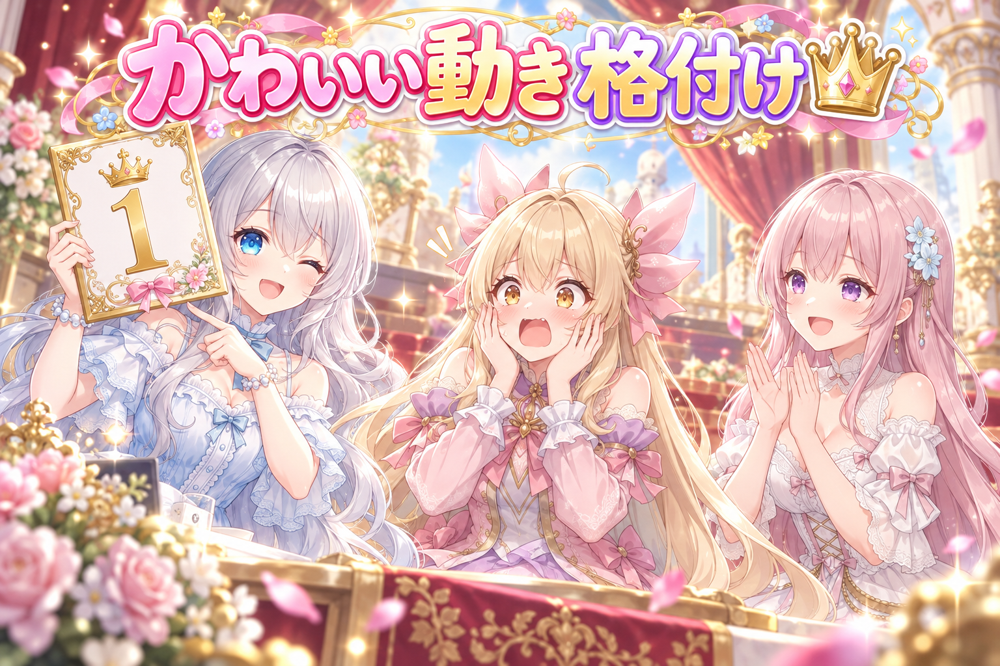

📌 3行まとめ
- Live2D のアイリスの紹介動画パート2〜4が合格し、そこまでの作り方とルールを次のアバターにも使えるように記録した
- 手をふる・ピース・ゲーム・カーテシーなど30近い動きを入れた紹介動画を作ったが、肩が体から離れて見える・腕が横髪より手前に出るという大きな課題が見つかった
- 作品紹介に使う切り抜き画像には『一部です』と題名を添えるルールを作り、もっさりしてきた確認アプリの高速化と、配るプロンプト2本の公開も行った
1. アイリスに手ふり・ピース・ゲームの動きを足した🎮

動画が合格したあと、まずは今までに分かった作り方・ルール・仕様を細かく書き残しました。次に別のキャラの Live2D アバターを作るときも、同じ失敗をくり返さないためです。 そのうえで本題。配信や動画で人気の動き、そしてアイリスらしい可愛い動きを、プロのやり方を調べてから実装しました。手をふる・横ピース・ガッツポーズ・両手でほっぺ・考えるポーズ・ゲームのコントローラ・手でハート・ティーカップ・マイク・ぱたぱた・もじもじ・カーテシー・びっくりなど、30場面近くを3分ほどの紹介動画にまとめています。 ポーズの腕は、画像生成AIに袖と手と持ち物をまとめて描いてもらい、下ろした腕と入れ替える作り方。ハートや音符、キラキラが飛ぶ小物も添えました。動画はできるたびに、作った側の説明を信じない厳しい検品係に見てもらっています。
📝 ポイント（初心者向け解説・技術メモ・まとめ）
- 初心者向け解説：Live2D のポーズは、着せ替え人形の腕パーツを付け替えるイメージです。いつもの腕をそっと隠して、手をふっている腕をそっと出すと、人形が手をふったように見えるんです🎀
- 技術メモ：Cubism 5.3 で、下ろした腕（上腕・袖・前腕・手）と、画像生成AIで1枚に描いたポーズの腕10種類を不透明度で入れ替える構成。飛ぶ小物（ハート・音符・キラキラ）は1枚絵を1メッシュずつに。確認は VTube Studio と pixi-live2d-display の自作ビューアで行い、台本から紹介動画を書き出して第三者視点の検品にかける。
- ひとことまとめ：動きを増やす前に、それまでの作り方を書き残しておくと次のアバターが楽になる。
2. 👀 今日のやらかし

動きは増えたものの、動画を見たルピナスから大事な指摘が入りました。ひとつは、肩から先が体ときれいにつながっておらず、腕が体から離れて見えること。もうひとつは、肩から先が長い横髪より手前に描かれてしまう場面があること。キャラの見た目が崩れるので、これは絶対にだめなポイントです。 さらに、腕や手の形が1コマでぱっと切り替わるのもアウト、というルールもはっきりしました。いっそ肩から手まで、いろいろな動きに向いた土台の部品を新しく作り直すのもあり、という判断も出ています。そのため、プロのモデラーさんが腕をどう作っているのかを改めて調べました。 ちなみに同じ日、イラストの作り直しでもアイリスの指が2回崩れて、最後は胸から上の構図に逃げています。今日は一日じゅう『手』に振り回された日でした。
📝 ポイント（初心者向け解説・技術メモ・まとめ）
- 初心者向け解説：お洋服の重ね着と同じで、髪の毛がいちばん外側にくるはずなのに腕が上に乗っちゃうと、とっても不自然に見えます。重ねる順番と、肩のつなぎ目が見た目の命なんです🧥
- 技術メモ：今回決まった絶対ルールは3つ。①肩から先は体と途切れなくつながって見えること ②肩の前に垂れる横髪より手前に腕を描画しないこと（描画順の管理） ③腕・手の形を1コマで切り替えないこと。不透明度の一発入れ替えだけではこのルールを満たしにくいため、肩から手まで動きに向いた土台部品を作り直す案も検討対象になった。
- ひとことまとめ：動きを増やすほど、肩のつなぎ目と重なり順のごまかしは効かなくなる。
3. 切り抜き画像に『一部です』を添えるルール✂️

作品をほかの場所で紹介するとき、縦長や横長の枠に合わせて絵の一部だけを切り抜いた画像を使うことがあります。ところがルピナスが見直したところ、ろうそくが何本あるか数える絵なのに、切り抜きではろうそくを数えられない、という場面がありました。 しかも紹介文に何のヒントもないと、見た人は『どこかに全体の絵がある』ことにすら気付けません。そこで、切り抜きを使う紹介には『一部』という言葉と作品の題名を必ず入れるルールにし、入っていないものを止めるチェックも足しました。あわせて、ふだんの定時の投稿までほかの場所に出した作品のように見えてしまう書き方も見直しています。
📝 ポイント（初心者向け解説・技術メモ・まとめ）
- 初心者向け解説：ケーキの写真を1切れぶんだけ見せられても、ホール全体の可愛さは伝わりませんよね。『これは一部だよ、本物はこっち』と一言そえるだけで、見た人は全体を見に行けるんです🍰
- 技術メモ：切り抜き画像を使う紹介文には『一部』の語と作品の題名を必須にし、欠けていれば出さないチェックを追加。数える・探すタイプの絵は切り抜くと遊びが壊れるので特に注意。定時の投稿と、ほかの場所に出した作品の紹介が混同されないよう、紹介文の書き方も分けた。
- ひとことまとめ：切り抜きは便利だけど、『本物がある』ことを伝えないと見る人が迷子になる。
4. もっさりしてきた確認アプリに手入れ🐢

三姉妹のイラストは、スマホから開ける自作の確認アプリで1枚ずつ見て、残す・合格・カテゴリの移動を決めています。ところが最近、ボタンを押したあとに長く待たされたり、固まったように見えたりすることが増えてきました。 このアプリは、置き場のフォルダが数千もあり、高画質の大きな画像がたくさん入っています。どこで待たされているのかを、速いはずと思い込まずに厳しい目で洗い出してもらい、その結果をもとに速くする手入れをしました。どのくらい速くなったかは、ふだん使いながら確かめていくところです（未検証）。
📝 ポイント（初心者向け解説・技術メモ・まとめ）
- 初心者向け解説：お部屋に荷物がどんどん増えると、探し物をするたびに時間がかかりますよね。アプリも同じで、中身が増えたら片付け方を見直してあげるとまた軽やかに動けるようになります🐢
- 技術メモ：Python の自前 HTTP サーバーで動く確認アプリ。数千のフォルダと高解像度の png が溜まる構成では、操作のたびの一覧の数え直しや大きい画像の読み込みが待ち時間の原因になりやすい。今回は『速いはず』を前提にせず待ちの原因を洗い出してから改修。効果は実測前（未検証）。
- ひとことまとめ：遅いと感じたら、まず『どこで待っているか』を疑うところから。
5. 本屋さんと旅行ガイド、配るレシピ2本📚

この日は、みんなに自由に使ってもらうプロンプト（絵の注文書）も2本公開しました。1本目は ComfyUI 向けの、古い本屋のはしごに腰かけて本ごしにこちらを見て微笑むひととき。窓の光と舞うほこりのきらめきがポイントで、最初の行だけ変えれば、自分のキャラで同じ場面が作れます。 2本目は画像生成AI向けの『もしも、うちの子と旅行に行けたら』。キャラの絵と名前を入れるだけで、その子が案内する旅行ガイドブックを、行き先やおすすめまで考えて作ってくれるレシピです。ルピナスの行き先は、花の咲く港町になりました。
📝 ポイント（初心者向け解説・技術メモ・まとめ）
- 初心者向け解説：配るプロンプトは、お料理のレシピカードみたいなもの。材料の1行目だけ自分のキャラに入れかえれば、同じおいしい一皿が自分の子でも作れちゃいます📖
- 技術メモ：ComfyUI（Anima）向けは、LoRA がない人は1行目の髪色・髪型を、LoRA がある人はトリガー語だけを差し替える設計。画像生成AI向けは、キャラの絵と名前を入力するとガイドブック形式の1枚を構成まで考えて作る形にし、行き先のテーマ・色・服・背景も欄で指定できる。
- ひとことまとめ：差し替える場所を1か所にしぼると、配るレシピはぐっと使いやすくなる。
6. 🎁 お楽しみコーナー：アイリスの動き かわいさ格付け

今日はアイリスが新しい動きを30近く覚えた記念に、その中から『いちばん可愛い動き』を三姉妹で格付けします。ただし、ご本人がいちばん納得していない様子で……。
あなたが推したいアイリスの動きはどれですか？ 手ふり派・ゲーム派・カーテシー派、それとも隠れた名場面派？ あなたの1位を、ぜひコメントでこっそり教えてくださいね！
7. 💐 今日のまとめ
- うまくいった作り方は、次のアバターでも使えるように、その場で記録しておくと強い
- 動きを増やすと、肩のつなぎ目・髪との重なり順・1コマでの切り替えといった粗が一気に目立つ
- 切り抜き画像には『一部です』と題名を添えると、見る人が全体の絵まで辿り着ける
- 遅いアプリは、思い込みを捨てて『どこで待っているか』を探すところから
みんなは、作ったものの『一部だけ』を見せるとき、どんなふうに全体へ案内してる？
💬 コメント
お名前とコメントだけで送れるよ（承認されるとみんなに表示されます🌸）
コメントを読み込み中…